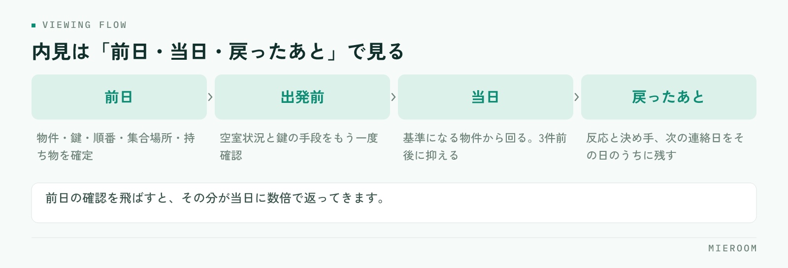

内見の準備に時間がかかると感じているとき、実際に時間を使っているのは当日の案内ではありません。前日までに決まっていない項目が、当日に持ち越されているのが原因です。この記事では、内見前に確定させておくこと、鍵の手配の段取り、回る順番の決め方を順に整理します。
この記事の結論
内見の所要時間を決めているのは案内の上手さではなく、前日までに何が確定しているかです。物件・鍵・順番・持ち物の4つを前日に固定できれば、当日は移動と接客だけに集中できます。
内見で時間が消えるのは、当日ではなく前日
当日に慌てる店舗には、共通する場面があります。現地に着いてから鍵が別の場所にあると分かる。物件の空室状況が変わっていて、着いてから案内できないと判明する。お客様を待たせたまま、担当者が電話で確認を始める。

これらはすべて、前日までに確認していれば当日に起きなかったことです。当日の10分は、前日の2分で消せます。逆に前日の確認を飛ばすと、その分が当日に数倍で返ってきます。
もう一つ、見落とされやすい時間があります。案内から戻ったあとの入力です。誰をどの物件に案内し、どんな反応だったかを記録する作業が後回しになると、翌日以降の追客の判断材料が残りません。内見は「準備」「当日」「戻ったあと」の3つで見ると、短くできる場所が分かります。
内見前日までに確定させる6項目
前日にこの6つを潰しておけば、当日の確認事項はほぼ無くなります。
物件の空室状況・鍵の所在と受け取り方法・回る順番と所要時間・集合場所と時間・持ち物・お客様の優先条件。このうち1つでも「明日確認する」が残っていると、当日その分だけ止まります。
空室状況は、案内直前に業者間サイトで再確認します。前日に埋まることは珍しくありません。鍵の所在は次のセクションで扱いますが、方式によって動き方が変わるため、前日の時点で受け取り手段まで決めておきます。
回る順番と所要時間は、移動時間を含めて逆算します。集合場所は、現地集合か来店かで当日の動きがまったく変わるため、前日までに文面で伝えて確認を取ってください。口頭だけの合意は行き違いの元になります。
お客様の優先条件は、案内の途中で何を優先して比較するかの軸です。ここが曖昧なまま3件回ると、感想がすべて「悪くない」で終わり、次に進みません。
鍵の手配は、方式ごとに段取りが変わる
鍵は当日いちばん止まりやすい部分です。方式によって前日にやることが違います。
| 鍵の方式 | 前日にやること | 止まりやすい点 |
|---|---|---|
| キーボックス設置 | 暗証番号を確認する | 番号が変更されていて現地で開かない |
| 管理会社で受け取り | 営業時間と担当者不在時の可否を確認 | 土日に閉まっていて受け取れない |
| 現地で立ち会い | 時間の再確認と連絡先の控え | 到着時刻がずれたときに連絡が取れない |
| 自社で保管 | 持ち出しの記録を残す | 前の担当者が持ったままで見つからない |
前日に確認していても、当日の朝に変更が入ることがあります。出発前にもう一度、物件ごとの鍵の手段を口に出して確認してください。ここだけは重複して構いません。
複数物件を回る場合、鍵の方式が混在します。物件ごとに手段が違う前提で一覧にしておくと、移動中に迷いません。物件情報を横断して探す段取りは業者間サイトでの物件検索にまとめています。
当日の持ち物を固定する
毎回考えると抜けます。店舗で1つのセットを決めて、出発前にそろっているかだけを見る形にしてください。
- 物件資料（間取り図・募集条件・初期費用の概算）を物件ごとに1部ずつ
- スリッパ、メジャー、懐中電灯、軍手
- 記録用の端末またはメモ。写真を撮る前提で充電を確認する
- 申込に必要な書類の案内（何をいつまでに用意するか書いたもの）
- 名刺と、次回連絡の手段を書いたもの
初期費用の概算は、内見の前に渡しておくほうが後戻りが少なくなります。現地で気に入ったあとに金額で止まると、そこまでの時間がそのまま失われます。
メジャーと懐中電灯は地味ですが効きます。冷蔵庫や洗濯機が入るかをその場で測れると、その場で判断が進みます。電気が止まっている部屋では、日中でも収納や水回りが見えません。
回る順番の決め方
順番は移動効率だけで決めないでください。判断の材料がそろう順に組みます。
条件を満たす標準的な物件を1件目に置き、比較の基準を作る。2件目に本命を置く。3件目は条件の振れ幅を見せる物件にする。3件を超えると印象が混ざるため、増やすほど決まりにくくなります。
1件目に本命を置くと、そのあとの物件がすべて見劣りして、比較そのものが成立しません。逆に1件目を極端に条件の悪い物件にすると、店舗への信頼が下がります。基準になる物件を最初に見せるのが無難です。
件数は3件前後に抑えます。時間を取って多く見せるほど満足度が上がるように思えますが、実際には判断が止まります。多く回すよりも、次に何を確認すれば決まるかがはっきりした状態で終えるほうが、申込までが早くなります。
内見後に、その日のうちに残すこと
案内が終わった時点で、次の判断に必要な情報はすべて担当者の頭の中にあります。これを当日中に形にしておくかどうかで、翌日以降の動きが変わります。
残すのは、案内した物件、それぞれの反応、決め手になりそうな条件、次の連絡日の4つです。とくに気に入らなかった理由は、次の提案を組む材料になります。「駅から遠い」で終わらせず、何分までなら許容できるのかまで踏み込んでおくと、次の物件選びが一度で済みます。
反応を記録していない店舗では、追客の文面を毎回ゼロから考えることになります。当日中の記録が残っていれば、翌日の連絡は短く具体的になります。反響から来店までの初動の考え方は反響への返信スピードにまとめています。
よくある質問
内見は何件くらい案内するのが適切ですか？
現地集合と来店集合、どちらがよいですか？
準備に時間をかけると、案内できる件数が減りませんか？
まとめ：当日の速さは、前日に作る
内見の段取りで差が出るのは、案内の話し方ではありません。物件・鍵・順番・持ち物を前日に固定し、当日は移動と接客だけに集中する。戻ったその日のうちに反応を記録する。この3つで、1件あたりにかかる時間ははっきり変わります。
今日からできるのは、持ち物のセットを1つ決めて出発前の確認項目にすることと、鍵の手段を物件ごとに一覧で持つことです。どちらも紙1枚で始められます。
ミエルームは、反響から接客・申込・入金までを案件ごとに1か所で管理し、案内の記録や反響の分析、LINE・SMSでの追客までを同じ画面で扱えます。Excelデータの取り込みと初期設定の代行、デモアカウントの発行、最短即日でのスタートに対応しています。今の進め方のまま整えたい段階からご相談ください。